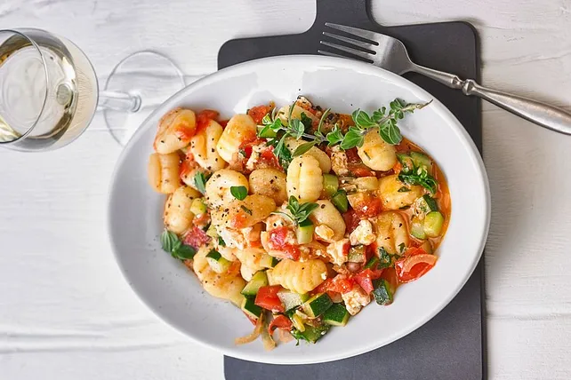

Gnocchi-Zucchini-Pfanne mit Schafskäse
Startseite

Ein Lckeres und Schnelles Gericht, für den noch schneller kommenden Hunger :D
Die angegebenen Mengen sollten für ca. 2 Portionen ausreichen (Zubereitungszeit ca. 30 min.)
- Gnocchi
- 1 große Zucchini
- 3 mittelgroße Tomaten
- 1 Zwiebel
- 2 Zehen Knoblauch
- 100g Schafskäse
- 1 gehäufter TL Oregano
- 1 EL Petersilie
- Salz und Pfeffer
- Gemüsebrühe, gekörnte
- 1 EL ÖL
- Die Gnocchi in reichlich Salzwasser kochen.
- Währenddessen die Tomaten grob würfeln, die Zucchini fein würfeln oder in Stifte schneiden, Zwiebeln und Knoblauch fein schneiden. Den Schafskäse zerkrümeln, hacken.
- Das Öl in einer Pfanne erhitzen, Zwiebeln und Knoblauch darin anbraten, die Zucchini auf höchster Hitze ca. drei Minuten kräftig mit anbraten.
- Etwas Wasser hinzufügen und bei mittlerer Hitze ungefähr acht Minuten dünsten lassen.
- Mit Salz, Pfeffer und Gemüsebrühe vorsichtig würzen.
- Nun die Tomaten, Schafskäse und Kräuter hinzufügen.
- Alles gut umrühren, damit eine gebundene Masse entsteht.
- Nochmals abschmecken und ganz zum Schluss die Gnocchi unterheben.